축구 슛 계측 앱을 여섯 번의 웨이브에 걸쳐 다시 만들었습니다. 매 화면은 시뮬레이터에서 실제로 조작해 촬영했고, 독립된 두 명의 비평가가 다섯 차례 적대적으로 심사했습니다. 이 페이지는 그 기록입니다.
비평가가 매 라운드 적용한 테스트입니다. 화면의 모든 한글을 가린 뒤, 그림만 보고 이게 무슨 앱인지 말할 수 있는가. "리스트"나 "폼"이면 실패, "계측"이면 통과입니다.
15개 화면 전부. iPhone 17 Pro 시뮬레이터에서 네이티브 해상도로 촬영했고, 데이터는 실제 저장소의 것입니다. 밴드는 전부 시드값이라 축의 절반 남짓을 차지합니다. 그게 이 프로젝트에 남은 유일한 문제입니다.
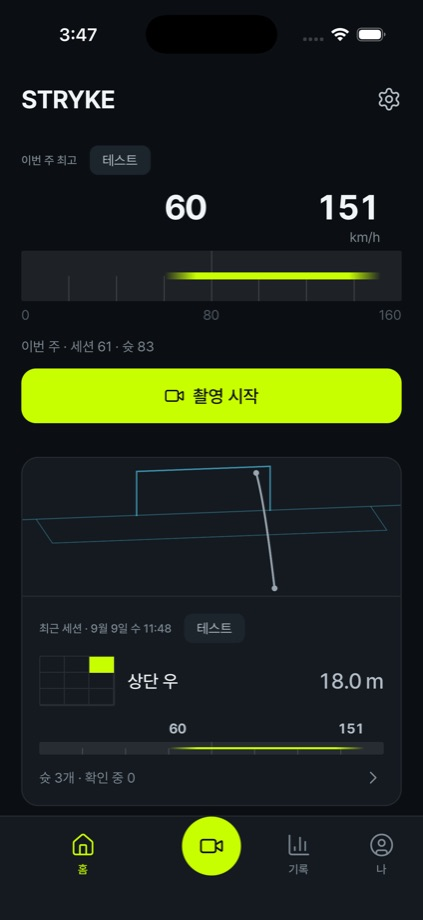
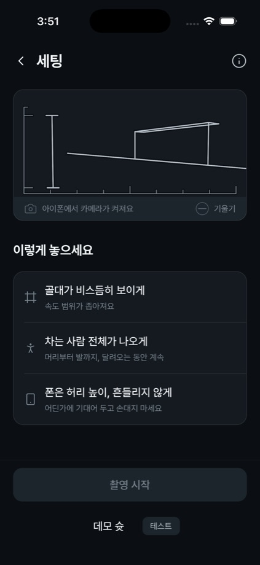
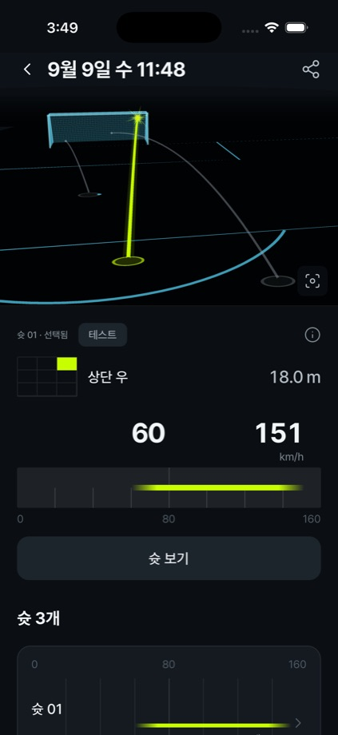
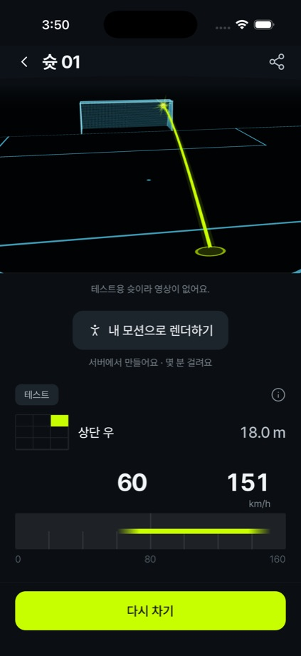
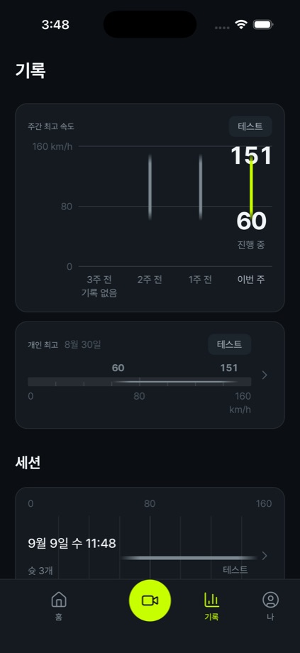
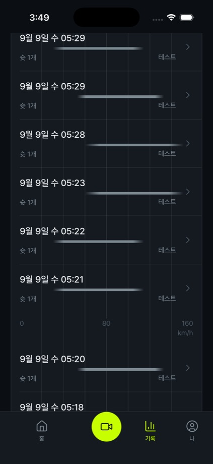
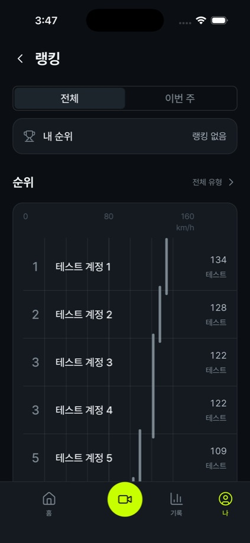
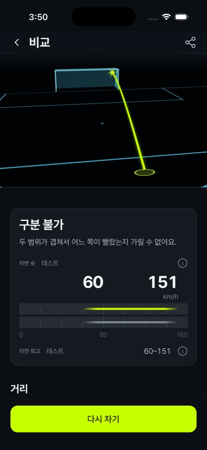
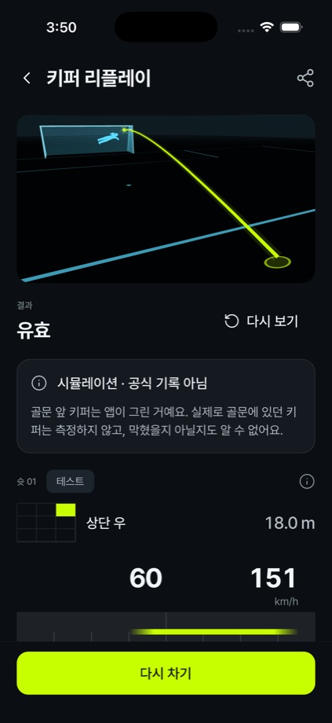
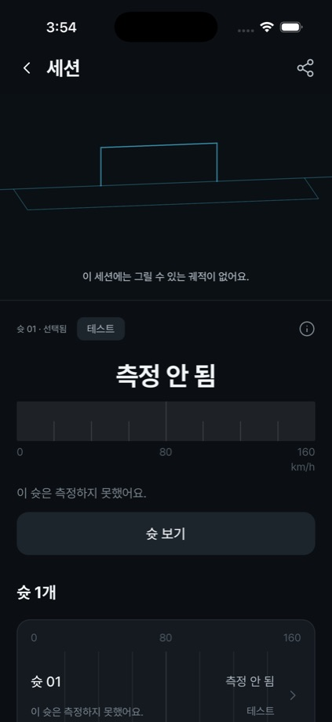
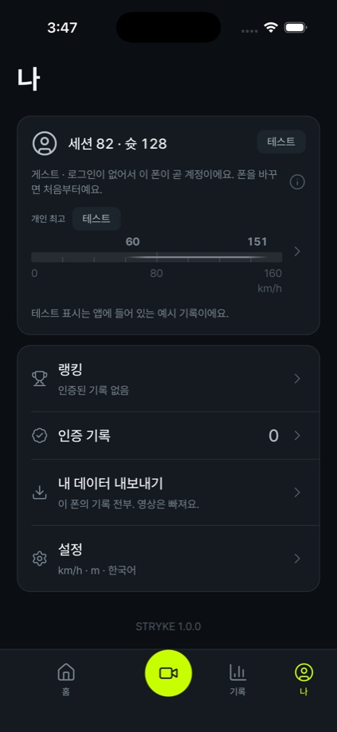
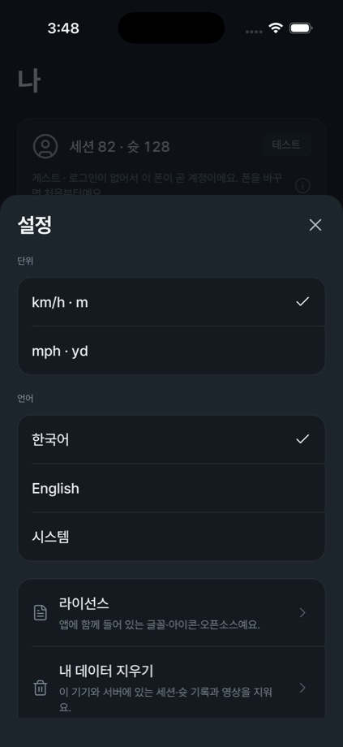
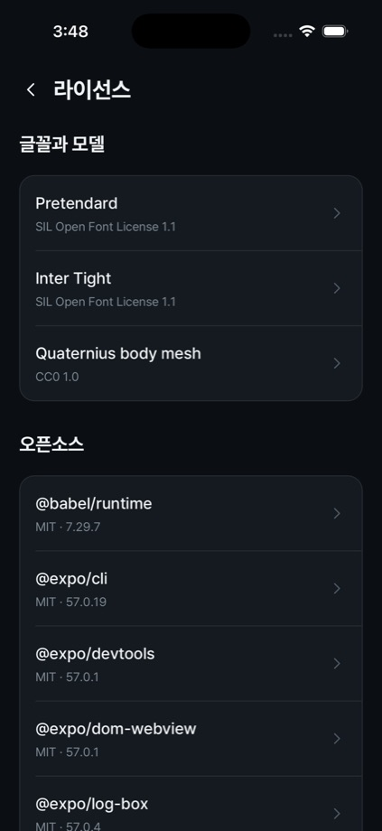
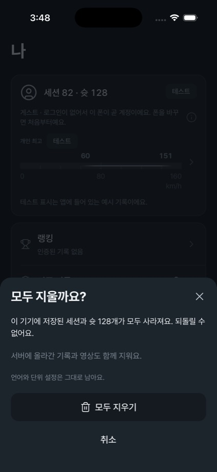
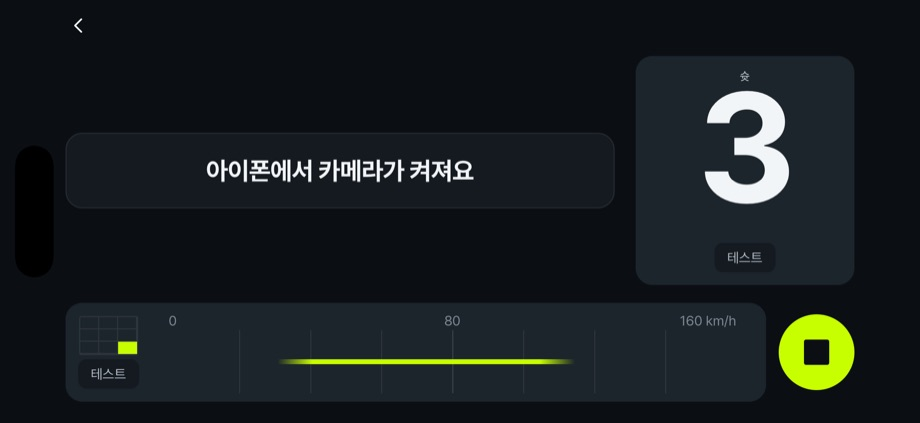
왼쪽은 당신이 "전혀 마음에 안 든다"고 한 그 앱입니다. 오른쪽은 지금입니다.
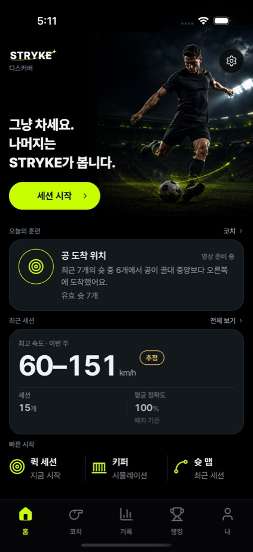
홈. 화면에서 제일 큰 물건이 워드마크였고, 유일하게 의미 있는 숫자가 세 번째 칸에 15pt 회색으로 있었습니다. 무의미한 카운트보다 작게. 지금은 이번 주 최고가 눈금 위에 서 있습니다.
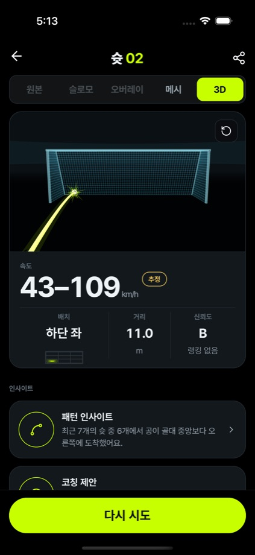
슛. 앱이 자기 숫자를 지웠던 화면. 43–109가 4pt 회색 트랙에 15pt 끝값이었고, 제일 큰 글자는 "슛 02"라는 라우트 이름이었습니다. 그림은 좌우 여백에 갇힌 썸네일이었습니다.
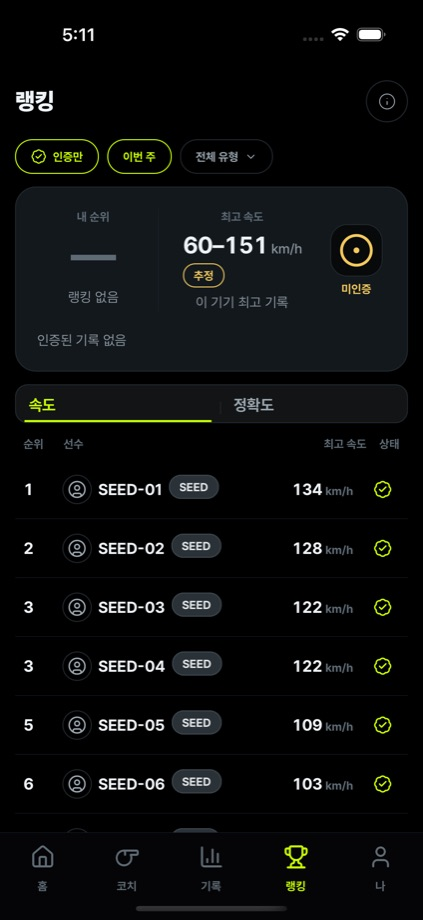
랭킹. 캡슐 9개가 각자 보이지 않는 축을 가져서, 1위 134와 9위 84가 50픽셀 떨어져 있었습니다. 지금은 하나의 눈금 위에서 307픽셀입니다. 122로 동점인 두 선수의 획은 하나로 합쳐집니다.
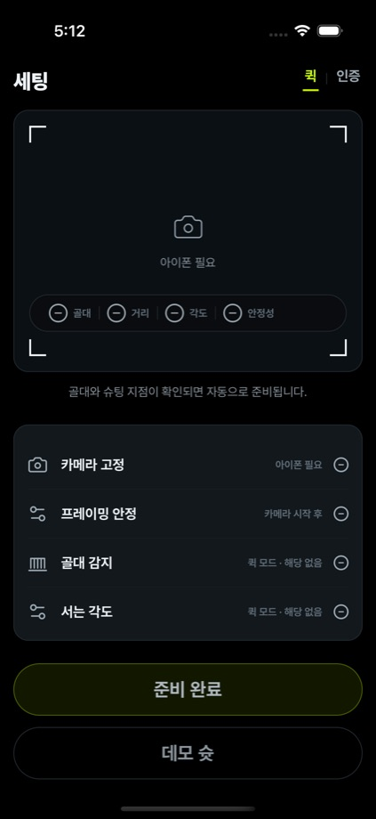
세팅. "준비 안 됨"을 다섯 가지 방식으로 동시에 말하면서 뒤로 가는 길이 없었습니다. 지금은 골대가 14m 밖 46도에서 핀홀 투영으로 그려지고, 지면선의 기울기가 곧 기울기 측정값입니다.
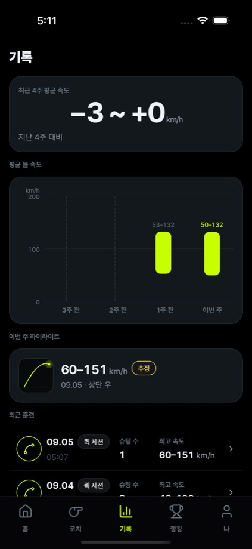
기록. 초점이 "−3 ~ +0 km/h"였습니다. 밴드에서 밴드를 뺀 값이라 선수가 쓸 수 없는 숫자인데, 화면에서 제일 컸습니다. 컬럼마다 자기 트랙을 갖고 있어서 기록 없는 주가 가장 높은 막대로 보였습니다.
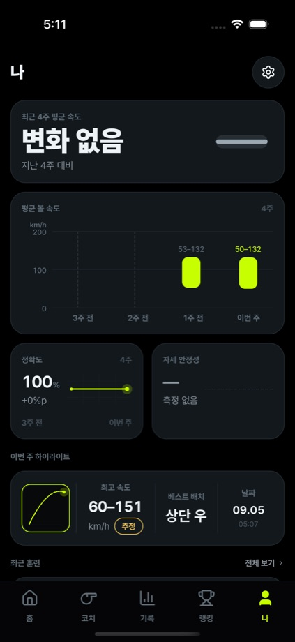
나. 기록 탭과 완전히 같은 화면이었습니다. 같은 델타 히어로, 같은 차트, 같은 목록. 게다가 존재하지 않는 측정값을 주장하는 타일 두 개가 얹혀 있었습니다.
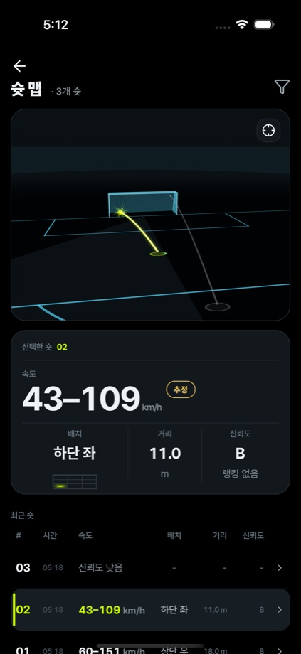
세션. 44pt 초점이 밴드였고 옆에 호박색 "추정" 칩이 붙어 있었습니다. 확실한 사실인 배치와 거리는 그 아래에서 속삭였습니다. 6열 표는 11pt였습니다.
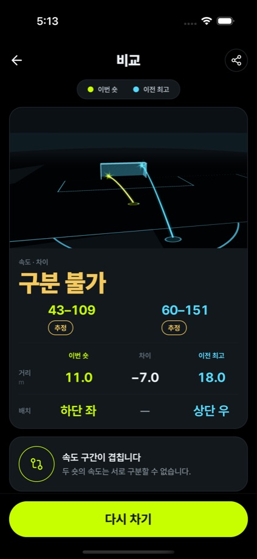
비교. 화면의 제목이 "구분 불가"였습니다. 판정은 맞지만 거부를 초점으로 삼은 화면이었고, 신뢰도가 낮을 땐 내 궤적이 화면에서 제일 흐린 물건이 됐습니다.
세상의 모든 계측기에는 반복되는 도형이 하나 있습니다. 눈금과 그 위의 표시입니다. 이 앱은 그 물건을 이미 세 번 다른 이름으로 갖고 있었고 배관 취급을 했습니다. 이제는 하나의 물건이고, 여섯 번째 문법이 생기면 CI가 실패합니다.
확실한 값만 자기 트랙을 뚫고 나가고 라임 잉크를 갖습니다. 불확실성은 넓어질수록 속이 비고, 40%를 넘으면 양끝의 캡이 사라져 어디에도 단단한 모서리가 없습니다. 비평가가 픽셀을 세어 확인한 무게비는 1.45 : 1입니다. 한 라운드 전에는 0.97 : 1, 즉 동률이었습니다.
처음에 "밴드는 display 크기로 렌더하지 않는다"고 썼고, 그게 앱의 숫자를 4pt 회색 트랙으로 만들었습니다. 불확실성은 크기가 아니라 모양입니다. 고친 뒤에도 절반이었습니다. 모양은 확실성보다 크게 외쳐서도 안 됩니다. 둘 다 사고 기록에 남겼습니다.
유능한 와이어프레임. 돈 내고 쓸 제품은 아님. 디자인 시스템을 충실도 1로 렌더링해서 사진 찍고 완성이라고 부른 것.
같은 라운드에서 완성도 비평가가 12개 공백을 찾았고 1위가 심각했습니다. 서버 없이 시작한 세션은 영구히 죽고, 재전송 경로가 앱 어디에도 없었습니다.
숫자가 아직 돈 낼 만하지 않고, 디자인이 그걸 명백하게 만들 만큼 좋아졌다. 디자인은 더 이상 이 앱과 유료 제품 사이를 막고 있는 것이 아니다.
같은 라운드에서 계기의 신뢰도 눈금이 거꾸로 돈다는 지적이 나왔습니다. 91km/h 추측이 CTA보다 무거웠습니다.
디자인은 이제 좋은 측정값이 어떻게 생겼는지 명세하는 일을 끝냈고, 그렇게 함으로써 그 측정값이 없다는 사실을 반박 불가능하게 만들었다.
보드를 하나의 축 위에 올리고 회색 판을 없애라, 그리고 디자인을 그만하고 레이더를 사러 가라.
디자인은 끝났습니다. "충분히 좋다"가 아니라 끝났습니다. 네 번의 심사 전에는 모든 화면이 실패했던 테스트를 이제 11개 중 10개가 통과합니다.
인터페이스에 뭘 더 해도 사람들이 돈을 낼지 여부는 바뀌지 않습니다. 이건 측정할 것이 없는 계측기입니다. 있을 수 있는 최선의 위치이자, 머물 수 있는 최악의 위치입니다.
이제는 측정할 것이 없는 완성된 계측기이고, 그 두 문장의 차이는 구장에서의 오후 한 나절과, 91이 아니라 8킬로미터 폭으로 돌아오는 숫자 하나입니다. 숫자를 가지러 가세요. 여기엔 제가 더 판정할 게 없습니다.
완성도 비평가의 마지막 경고는 좋게 끝나지 않았습니다. 같은 종류의 결함이 다섯 웨이브 연속으로 발견됐고, 매번 이음매가 없는 모듈이었습니다. 줄을 고치기 전에 파일에 이음매를 주라는 조언이었고, 그대로 했습니다.
앱과 서버 목록은 비어 있습니다. 세 가지가 남았고, 세 가지 다 사람이 밖으로 나가야 하는 일입니다.
Stage 0에서 점 속도는 구조적으로 null입니다. 모든 화면이 축의 57%를 차지하는 시드 밴드를 찍습니다. 검증 기준은 이제 문단이 아니라 앱이 이미 그릴 줄 아는 세 가지 그림입니다. 13km/h 이하는 꽉 찬 블록, 그보다 넓으면 속이 비고, 검증된 점은 라임 숫자와 트랙을 뚫는 표시를 받습니다.
촬영 경로가 실제 카메라로 한 번도 실행된 적이 없습니다. 이 기록의 모든 프레임이 픽스처이거나 실험실 클립이거나 시뮬레이터 SQLite에 손으로 넣은 행입니다. 비평가 표현으로는 그 한 번의 실행이 지난 세 웨이브를 합친 것보다 많은 정보를 줍니다.
공유 계정은 사라졌고 이제 설치마다 자기 기록장을 갖습니다. 프로필 화면은 정직하게 말합니다. "로그인이 없어서 이 폰이 곧 계정이에요. 폰을 바꾸면 처음부터예요." 좋은 제품이자, 아직 돈을 안 낼 이유입니다.